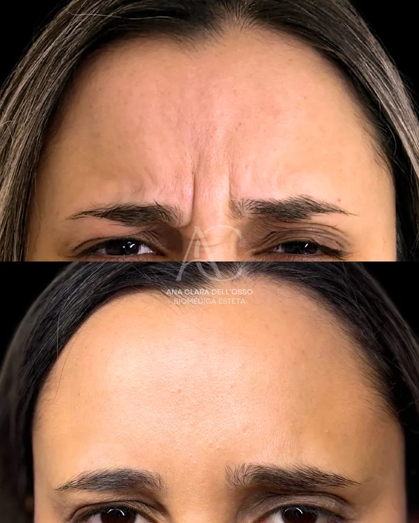

Antes e depoisBotox
Toxina botulínica
Reduz a contração muscular responsável pelas linhas de expressão, suavizando rugas dinâmicas — testa, glabela e pés de galinha — e desacelerando seu aprofundamento, sempre preservando a movimentação natural do rosto.
Reaplicação: 4–6 meses
Tirar dúvida